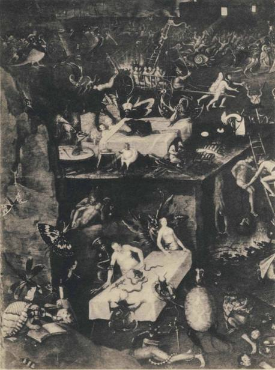
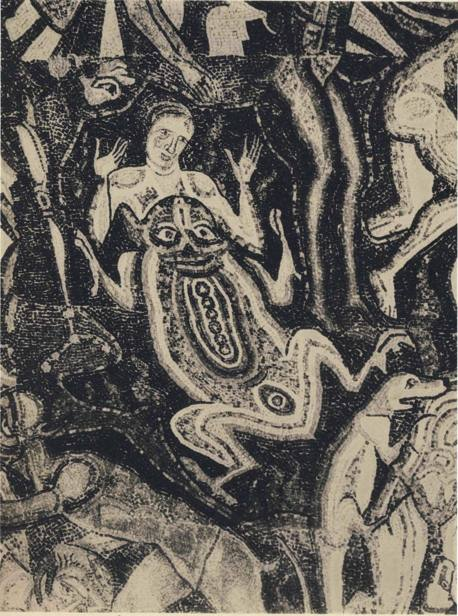

For 'toad' the Catalans say gripau, and a word of the same root, grib, is re-
served by Russians to designate the mushrooms that they esteem most highly.
What is the common semantic theme here, and do these words point to a com-
mingling of toads with mushrooms in primitive thinking, long ago ? Early in
our argument we mentioned this strange evidence and promised to return to it.
The words for 'toad' in Europe, as we have seen, are numerous. They are all,
we believe, evasive in character, euphemisms resorted to as a refuge from an early
word that fell under tabu. That archaic term is unknown to us - unless it be the
Gallic craxantus, which comes down to us in a single citation. If our findings
prove acceptable, there are about ten basic euphemisms for 'toad' in Europe.
We discover 'the Poisonous One' in 'natterjack', in the Anglo-Saxon tosca,
Breton tousec; and 'the Burning One' in the Danish tudse and Swedish tossa.
The Irish combine these two when they say 'the Poisonous Burning One' -
losgann nimhe. There is 'the Moist - or - Slimy One': Welsh llyffant, Anglo-
Saxon yce, Low German utze, and High German Unke. To these we add a cluster
of words for 'toad' from Eastern Europe: the Czech and Polish ropucha, Lithua-
nian rupUze and krupe, and Slovenian rapuch, stemming back to words meaning
pus, foul eruption, rash, coarseness.
The Spaniards see in the toad a skin or hide - escuerzo; and so did the Cor-
nishmen when they still spoke their own tongue - croinoc. The idea of gaseous
distension lies behind the Latin bufo and the Russian zhaba, the Greek cpuaaXog;
and the 'cow's udder' of the Albanian thithelope. We hazard the suggestion that
the padde of the Low Countries, Scandinavia, and the British Isles is the same
word as the 'padding' of a padded garment. The color of the toad finds ex-
pression in the Latin rubeta and the Greek cppuvoc; - unless this latter means 'the
Burning One'. The idea of excrement hides behind the German Krote, and was
responsible, we think, for shaping the French word crapaud, and between these
two lie the Romansch forms cratun and crapun. A third Romansch form, rustg,
is mysterious; it could have lost an initial k or g, and in that case might have
been originally krustg* which reminds us of the Lithuanian word for toad,
krupe. Or has it the same origin as the Italian rospo, which by its Latin root
conveys the idea of scratching > The Spanish sapo is, we think, a Greek borrow-
ing, meanning 'snake' in Greek. The idea of swelling and inflation underlie the
I. Cf., e.g., German Kreide, chalk, which becomes Romansch rida.
Austrian words, brattling and brotze, and the Bavarian broz and perhaps braste
also. Finally there is the Old French word, le hot, 'the Cripple', with its demonic
associations, for which a parallel may be found in the Austrian bratze.
There remains to be considered the Catalan gripau with its Proven9al
cousin grapal. The French crapaud evolved from the latter, and we find an addi-
tional derivative in the Romany dialect of central Europe, where the toad is
called grapodo. Perhaps there are other traces of the same word. The Latin rana,
frog, would normally evolve in French into renouille but the actual word is
grenouilk, and that initial g has given rise to considerable learned discussion.
Surely it is borrowed from the name of the toad. There is a familiar French
saying: 'Fin comme Gribouille qui se jette a 1'eau de peur de la pluie', or else 'de
peur de se mouiller': 'As clever as Gribouille who jumps into the water for fear
of the rain', or 'for fear of getting wet'. Scholars have debated the origin and
meaning of Gribouille. Who was this immortal simpleton? We suggest that he
was merely a personification of the toad, which jumps into the water when
disturbed by rain-drops, and that in Gribouille we discover the unique survival
in French of the variant of crapaud that is still current in Catalonia, viz., gripau.
The root behind gripau is grip-, and it means what it says: to grip, to seize,
to hold, to grab. There is one act in the life of the toad that is marked by a
vice-like grip of altogether astonishing strength and duration. This is the act
of mating. Everyone who comes upon toads at that moment in their life cycle,
in the spring of the year, is held in horrid fascination by the spectacle. Country-
men know the sight from childhood. The smaller male climbs on the back of
his mate and embraces her around the armpits. There he chngs for days and some-
times for weeks, and cannot be detached from her by any interruption, even
permitting himself to be cut up alive rather than let go. Instances have been
reported where the forearms of the male have become ankylosed from their
prolonged immobility. When the males outnumber the females, then the males
clamber over each other on the single mate, and cling to each other and to her,
even smothering her to death, and still they cling in a cluster to the corpse as
it begins to decompose. These knotted clusters of toads find apt expression in
the Provencal grapal, related as this word is to the idea of a cluster, as of grapes.1
There is abundant evidence that the sex habits of toads gripped the imagina-
tion of our ancestors. Toads were a symbol of lechery, and so were warts and
moles, with which toads were associated. Professor Meyer Schapiro has pointed
out that "the conception of the unchaste woman tormented by serpents at her
I. See F. Angel's La Vie et les Mceurs des Atnphibiens, Paris, 1947, pp. 153-155, for a vivid account of the mani-
festations of the mating instincts in toads.
186
'GRIPAU' AND 'GRIB'
breasts and sometimes toads at her private parts is common in Romanesque and
Moslem fantasy".1 Probably the supreme expression of this association of ideas
is in Shakespere, when Othello, obsessed with jealousy, confronts Desdemona
with his monstrous charge, and then in a terrifying passage drains the very dregs
of his tormented being, rising to his climax when, at the end, he invokes the
image of mating toads in a figure that would be foully obscene in any context
but this:2
Had it pleas'd Heaven
To try me with Affliction, had they rain'd
All kind of Sores, and Shames on my bare head:
Steep'd me in povertie to the very lippes,
Given to Captivitie, me, and my utmost hopes,
I should have found in some place of my Soule
A drop of patience. But alas, to make me
The fixed Figure for the time of Scorne,
To point his slow, and moving finger at!
Yet could I beare that too, well, very well:
But there where I have garnerd up my heart,
Where either I must live, or beare no life,
The Fountaine from the which my currant runnes,
Or else dries up: to be discarded thence,
Or keepe it as a Cesterne, for foule Toades
To knot and gender in!
Bosch shows us this lecherous toad in the detail of his Seven Mortal Sins
that we have reproduced on Plate xm. In Venice there hangs in the ducal palace
a singular painting of demonic import, crowded with the creatures of Hell.
It is attributed to a painter of unknown identity who is known as the pseudo-
Herri met de Bles. In one detail we discover our giant toad squatting on the
double bed and staring at its sinful occupants. In the mosaics of the Battistero
in Florence, executed early in the I3th century, a supine toad is superimposed
on the body of a supine woman, and here the meaning is revoltingly clear.
There emerges, then, a clear picture of the toad as seen through medieval
eyes - poisonous, pustulous, lecherous, possessed of a strange capacity to innate
itself with air; in its facial expression and in the disposition of its torso and limbs,
the very incarnation of a soulless homunculus, crouching and jerking and func-
1. Quoted from his article, 'From Mozarabic to Romanesque in Silos', The Art Bulletin, vol. xxi, no. 4, De
cember 1939, p. 328. See also Walter Clyde Curry's Chaucer and the Medieval Sciences, Oxford University Press,
N. Y., p. 84 ff.
2. Othello, rv: 2, 61; on one other occasion Shakespere refers to mating toads, Troilus and Cressida n: 3, 170:
"I do hate a proud man, as I hate the ingendring of Toades." See also Waldemar Deonna's paper on 'La
Femme et la Grenouille', in La Gazette des Beaux-Arts, November 1952.
I87
tioning like human kind on the animal level of man's dual nature; a horrible
caricature in miniature of sensual man and miserable sinner.
We suggest that the Catalan and Proven9al words for 'toad' were originally
keyed to the mating act. In the fungal world there are many erotic and phallic
associations, as we have seen. It would have been a happy solution to our problem
of grib and gripau if we could have discovered in the Russian word grib the erotic
associations that would have linked it with our interpretation of grip au, but they
do not exist.
The story ofgrib in the Slavic world is the same that we know well from the
West. At one time the word designated a particular class of mushrooms. By its
pre-eminence this class came to stand for the whole mushroom world, and its
name became generic, usurping the semantic terrain originally occupied by the
Indo-European words, gomba and the hypothetical bu-dla, which we discussed
on pages 93-94. A glimpse into this curious history is offered to us by the Book of
Rules of the Josif Volokolamskij Monastery for the i6th and zyth centuries,1
wherein we learn from the refectory diary that the monks were served mush-
rooms regularly on Wednesdays and Fridays, the fast days. The amanuensis
records sliced mushrooms, boiled sliced mushrooms, chopped mushrooms,
mushrooms with sauce, and mushrooms with garlic. For 'mushrooms' he uses
only two words: griby and gruzdi, and it is clear that all kinds belonged to one or
the other. Apparently all boleti were griby and all gilled mushrooms were
gruzdi. Gmzd' still carries traces of this old meaning: it floats uncertainly in
its specific application among various lactarii and russulas, though it belongs
specifically to the lactarius piperatus.
Grib circulates chiefly among the mycophilic northern Slavs and the Slo-
venians. We think it is unknown in Serbian and Bulgarian, but it appears in
Polish as grzyb, in Czech as hrib, in Ukrainian as hryb, and in Slovenian as grib.
The idea inherent in the root is familiar to us: grubbing, rooting, scraping,
digging, grabbing, gripping.2 It evokes the activity of the mushroom gatherer
in the forest. Down into Renaissance times the Germans used Griibling as a
1. See Chtenija v Obshchest've Istorii i Drevnostej pri Moskovskom Universitete, 1880, bk. 3, p. 113.
2. Max Vasmer in his new Russian etymological dictionary suggests a novel root £01 grib, linking it with certain
words signifying 'slime'. While slime, as we have shown, is semantically appropriate for a fungal word, the
etymology that we espouse is semantically felicitous, and we are fortified in our position by the comments of
Roman Jakobson, which he allows us to quote:
"As to^n'fc, I have not the slightest doubt about its origin. The Slavic languages clearly attest all vocalic grades
of the root greb; - (i) greb-, (id) the corresponding prolonged grade greb-; (2) grab-, (20) the corresponding pro-
longed grade grab-; (3) gr'b-, (30) the corresponding prolonged grade grib-. Thus: (i) Russ. grebti, gresti, Old
Church Slavonic greti, to dig up, dig in, rake, spade, shovel, scratch, scrape, row; Bulgarian greblo, rake, oar;
Russ. grebdt', to disdain, grebtd, sorrow, greben', comb; (la) O Ch SI, pogrebdti to bury. (2) Russ. grab, grave;
(20) Russ. grdbit', to snatch, grab, iob;grdbli, rake. (3) Czech hfbiti, to lie buried; hrbelec, curry-comb; (30) Serbo-
188

PLATE xxxin. Toads in Hell. Detail from a painting by the pseudo-Herri met de Bles.
Venice, Ducal Palace.

PLATE xxxiv. Toad. Detail from a mosaic. Florence, Battistero.
'GRIPAU' AND 'GRIB'
name for some kind of underground mushroom, perhaps a truffle, and of course
its etymology is identical. Was it accident that led to the use of the same root
in the East for 'mushroom' and in Catalonia for 'toad'; Did not this usage
emerge from the common pool of ideas that we have traced at length, a unified
field of associations, albeit discordant associations inasmuch as the Slavs loved
their mushrooms whereas all peoples rejected the toad?
Croatian griblja, furrow, gribati, to furrow; Russ. grib, mushroom. Similar vowel alternations are present in
other Slavic roots."
When Professor Jakobson worked out the foregoing etymology, neither he nor we had discovered the obsolete
German word Griibling, for which German philologists give the same origin as he for grib. German mushroom
manuals give Grubenlorchel as the common name of the helvella lacunosa; if this name is in actual circulation, it
is a survival in Germanic of the grib root.
191